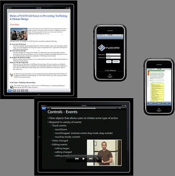
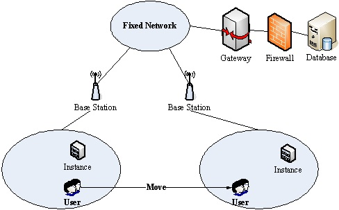

歡迎新研究生加入施國琛老師研究團隊
我們是一間具有國際觀的實驗室.相處氣氛如同家人一般.研究室會定期舉辦聚餐、出遊等活動。喜歡打球的同學，更不能錯過這位熱愛籃球的施教授.就讓施教授引領你們走向光明的康莊大道.你還在等什麼!?
Office: NCU CSIE E6-B203
Email: timothykshih@gmail.com
Phone: 0921 889 501
研究主題
- Game-based Learning – Video Games on iPad
- Interactive Multimedia – Jogging with Avatars
- Video Technologies – Special Effect Production
- Video Technologies – Wedding Video Generator
研究領域
互動式多媒體及遊戲
Interactive Multimedia & Games
download
影像處理是一門非常複雜且有趣的技術，本研究室的研究方向是以修補技術為基礎，進而去發展出多種研究議題，如老舊影片的修復、動態影片修補以及影像編輯系統。而影像編輯系統可以將一段自行拍攝的影片自己進行特效製作，每個人都可以創作出自己的阿凡達！除了以上領域，我們也有針對人臉辨識、人機互動等等的議題進行研究，這些就是本研究室的研究成果。
- 動態影像修補 (Motion Inpainting)
- 三維物件製作 (3-D Object Generation)
- 影像物件移除及復原 (Video Inpainting)
數位學習系統
Distance Learning Technologies
download
數位學習一直以來都是資訊領域中熱門的研究議題，舉凡是數位學習標準，寓教於樂的遊戲式學習，無所不在學習與互動學習科技等，都是我們的研究的目標。
- 行動裝置學習平台開發(Ipone, Ipad, Android..)
- 遊戲式學習科技 (Game Based Learning)
- 數位學習標準 (Distance Learning Standard)
- 互動學習科技(Interactive Learning Technology)

普適運算
Ubiquitous Computing
download
利用網路科技所實現的無所不在運算技術是非常具有發展潛力的一門學問，無論是運算效能之提升、無所不在環境建置和社群網路行為的研究及應用…等，都是我們的研究方向。
- 雲端運算技術 (Cloud Computing)
- 無所不在之學習環境建製 (U-Learning Environment)
- 社群網路相關應用 (Social Network Application)

聯絡方式
Office: NCU CSIE E6-B203
Email: timothykshih@gmail.com
Phone: 0921 889 501